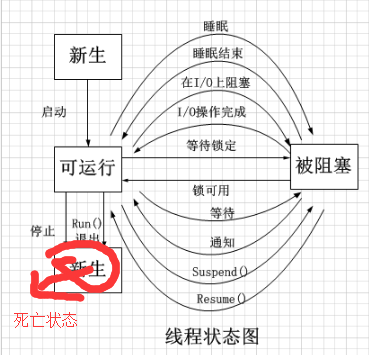
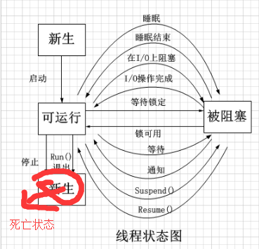

线程与进程
1：线程的基本概念、线程的基本状态及状态之间的关系？
线程，有时称为轻量级进程，是CPU使用的基本单元；它由线程ID、程序计数器、寄存器集合和堆栈组成。它与属于同一进程的其他线程共享其代码段、数据段和其他操作系统资源（如打开文件和信号）。线程有四种状态：新生状态、可运行状态、被阻塞状态、死亡状态。状态之间的转换如下图所示：
 
 2：线程与进程的区别？
1、 线程是进程的一部分，所以线程有的时候被称为是轻权进程或者轻量级进程。
2、 一个没有线程的进程是可以被看作单线程的，如果一个进程内拥有多个线程，进程的执行过程不是一条线（线程）的，而是多条线（线程）共同完成的。
3、 系统在运行的时候会为每个进程分配不同的内存区域，但是不会为线程分配内存（线程所使用的资源是它所属的进程的资源），线程组只能共享资源。那就是说，除了CPU之外（线程在运行的时候要占用CPU资源），计算机内部的软硬件资源的分配与线程无关，线程只能共享它所属进程的资源。
4、 与进程的控制表PCB相似，线程也有自己的控制表TCB，但是TCB中所保存的线程状态比PCB表中少多了。
5、 进程是系统所有资源分配时候的一个基本单位，拥有一个完整的虚拟空间地址，并不依赖线程而独立存在。

3.：多线程有几种实现方法，都是什么？
1. 继承 Thread 类
2. 实现 Runnable 接口再 new Thread(YourRunnableOjbect)
4：多线程同步和互斥有几种实现方法，都是什么？
线程间的同步方法大体可分为两类：用户模式和内核模式。顾名思义，内核模式就是指利用系统内核对象的单一性来进行同步，使用时需要切换内核态与用户态，而用户模式就是不需要切换到内核态，只在用户态完成操作。
用户模式下的方法有：原子操作（例如一个单一的全局变量），临界区。内核模式下的方法有：事件，信号量，互斥量。
5：多线程同步和互斥有何异同，在什么情况下分别使用他们？举例说明。
线程同步是指线程之间所具有的一种制约关系，一个线程的执行依赖另一个线程的消息，当它没有得到另一个线程的消息时应等待，直到消息到达时才被唤醒。
线程互斥是指对于共享的进程系统资源，在各单个线程访问时的排它性。当有若干个线程都要使用某一共享资源时，任何时刻最多只允许一个线程去使用，其它要使用该资源的线程必须等待，直到占用资源者释放该资源。线程互斥可以看成是一种特殊的线程同步（下文统称为同步）。
6.进程间的通信方式
进程间通信方式有管道、信号量、信号、消息队列、共享内存、套接字六种
（1）管道分为有名管道和无名管道，其中无名管道是一种半双工的通信方式，数据只能单向流动，而且只能在具有亲缘关系的进程间使用，一般用于两个不同进程之间的通信。有名管道也是一种半双工的通信方式，但它允许无亲缘关系进程间的通信。
（2）信号量是一个计数器，可以用来控制多个线程对共享资源的访问，它不是用于交换大批数据，而用于多线程之间的同步。他常作为一种锁机制。因此，主要作为进程间以及同一个进程内不同线程之间的同步手段。
（3）信号是一种比较复杂的通信方式，用于通知接收进程某个时间已经发生。
（4）消息队列是消息的链表，存放在内核中并由消息队列标识符标识，消息队列克服了信号传递信息少，管道只能承载无格式字节流以及缓冲区大小受限等特点。
（5）共享内存就是映射一段能被其他进程所访问的内存，这段共享内存由一个进程创建，但多个进程都可以访问。他往往与其他通信机制，如信号量配合使用，来实现进程间的同步和通信。
（6）套接字可用于不同及其间的进程通信。